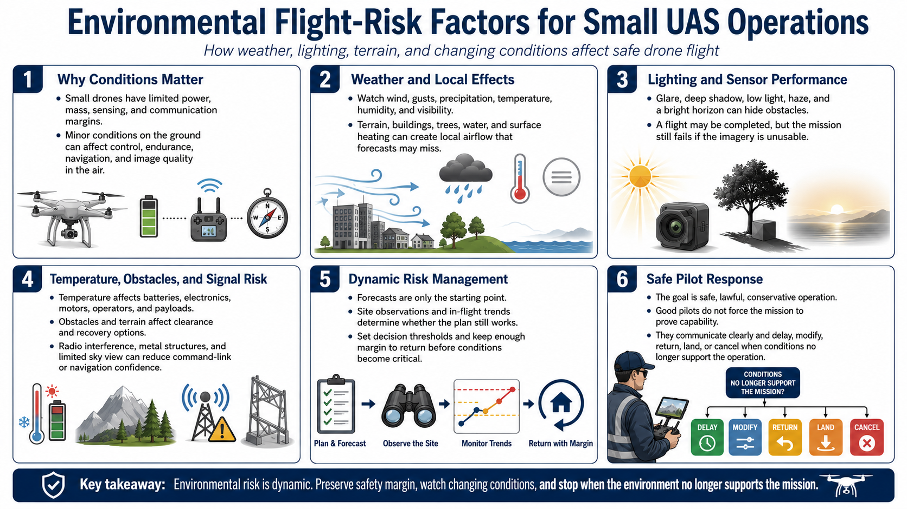

Why Environment Matters
Connecting to LMS... Progress: in progress

Narration
Environmental conditions are core flight-risk factors because small unmanned aircraft operate with limited power, mass, sensing, and communication margins. Conditions that seem minor on the ground can affect control, endurance, navigation, and image quality in the air.
Weather includes wind, gusts, precipitation, temperature, humidity, visibility, and rapidly changing local effects. Terrain, buildings, trees, water, and surface heating can shape airflow and create conditions that a distant forecast does not describe.
Lighting affects both pilot awareness and sensor performance. Glare, deep shadow, low light, haze, and a bright horizon can hide obstacles or produce unusable imagery. A technically completed flight may still fail if the data cannot answer the mission question.
Temperature affects batteries, electronics, motors, operators, and payloads. Obstacles and terrain affect clearance and recovery options. Radio interference, metal structures, and limited sky view can reduce command-link or navigation confidence.
Environmental risk is dynamic. A preflight forecast is a starting point, while site observations and in-flight trends determine whether the plan remains valid. Operators need decision thresholds and enough margin to return before conditions become critical.
The goal is safe, lawful, conservative operation. Good pilots do not prove capability by forcing a mission. They recognize reduced margins early, communicate clearly, and delay, modify, return, land, or cancel when the environment no longer supports the operation.